04 - Removing Noise Scan
For this step, you need to already have nifti files! If you currently only have DICOM files, please convert them to nifti’s first!
Depending on the sequence used in the scanner session, you might have data that were acquired with a denoising sequence. This is sometimes done, since it doesn´t take much time in the scanner, but you have the ability to denoise the data if it turns out to be necessary.
But by default, we don´t use this denoising information. Additionally, some applications (like fmriprep) cannot process data with this additional information!
Thus, before running our default pipeline with fmriprep, we have to remove this information from our scans!
1 Check for denoising scan in nifti file
1.1 Open freeview
You can check if the denoising sequence was used in for your data, by checking the functional scans in freeview. For this, you first have to source freesurfer and then open freeview:
Open a terminal (Monitor Icon at the bottom left on neurodesk)

Type
ml freesurferand press enterType
freeviewand press enter (from time to time, it can take a while until freeview opens, be patient! It is also possible, that some messages about runtime are printed in the terminal, but that is nothing to worry about!) 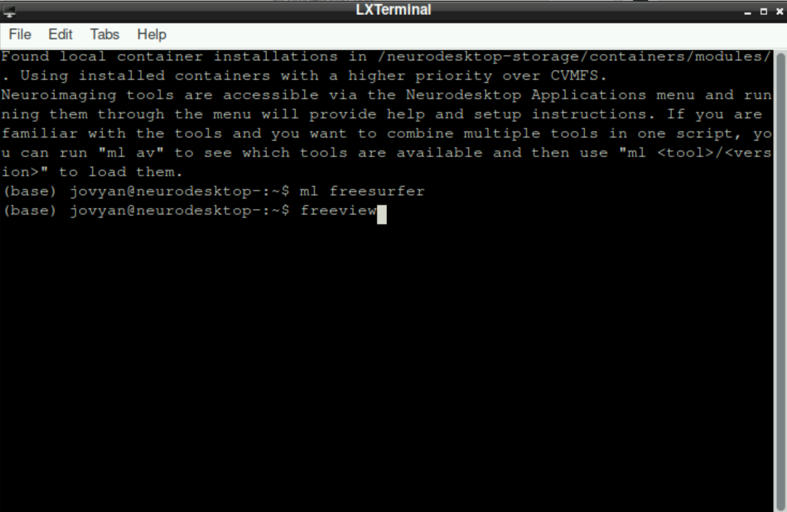
\(\to\) When freeview opened successfully, it should look like this: 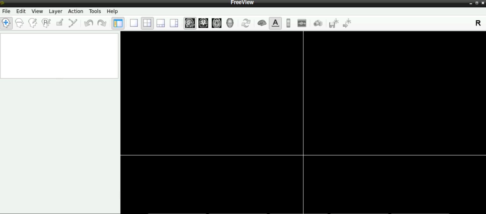
1.2 Load a functional volume
Now you have to look at a functional scan to see if there is a denoising scan at the end.
For this, select File > Load Volume (top left corner in freeview): 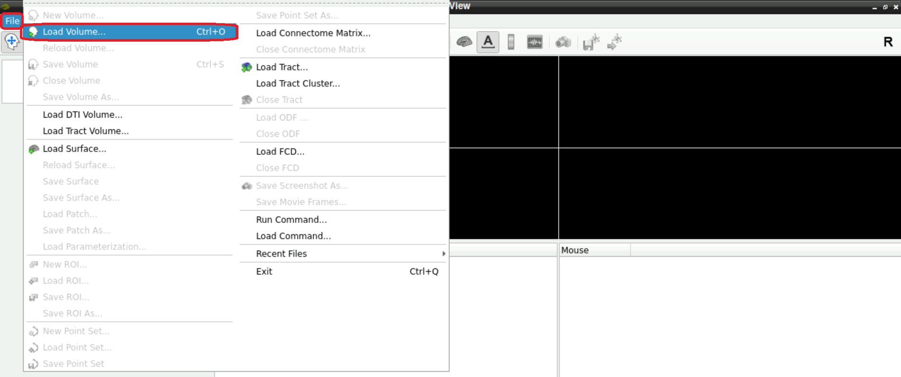 Load Volume">
A new window opens, asking you to Select volume file. Either type in the path(s) to your/a functional scan manually, or start by clicking on the folder symbol 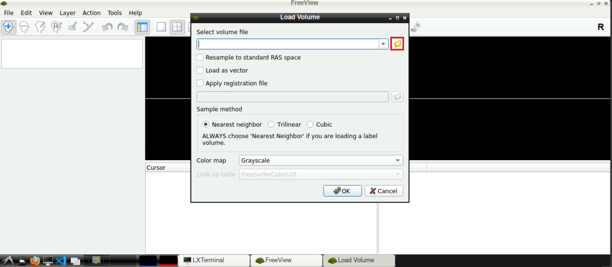
Navigate to your func directory in your BIDS, select one of the nifti files of one of the runs and press Open afterwards 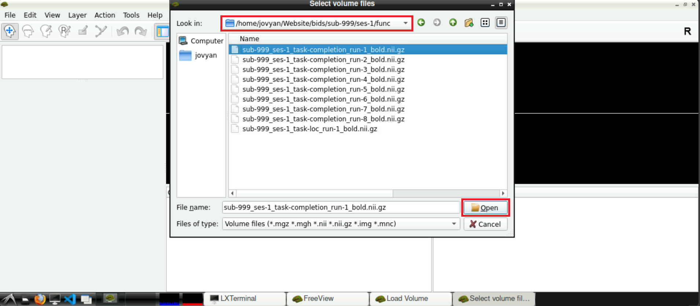
Now, with the field Select volume file specified with the path(s) to the nifti file, you can click Open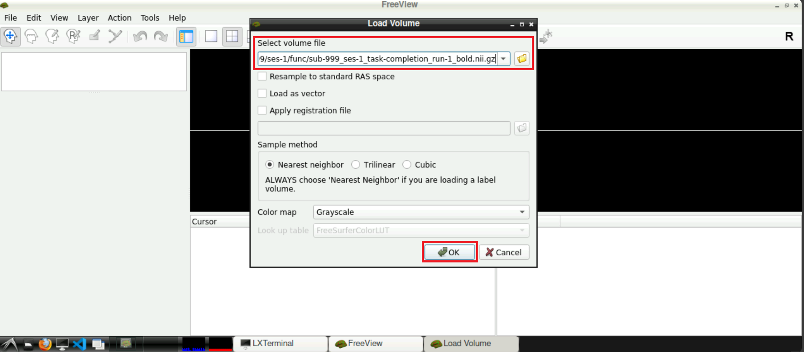
When the volume loaded, it should see some kind of data and something that looks like a brain: 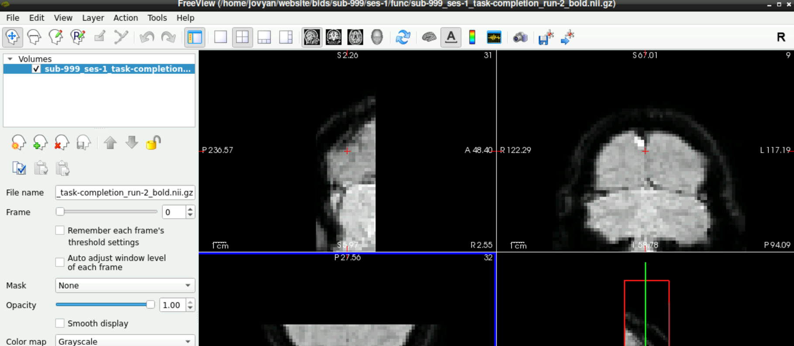
1.3 Check for Denoising Scan
To check if a denoising scan is included in you data, use the slider next to Frames (left side, roughly in the middle), to navigate to the last frame. If a denoising sequence was used during data acquisition in the scanner, this frame looks “empty”. Toggle between the last and second to last frame, to visualize the difference even more 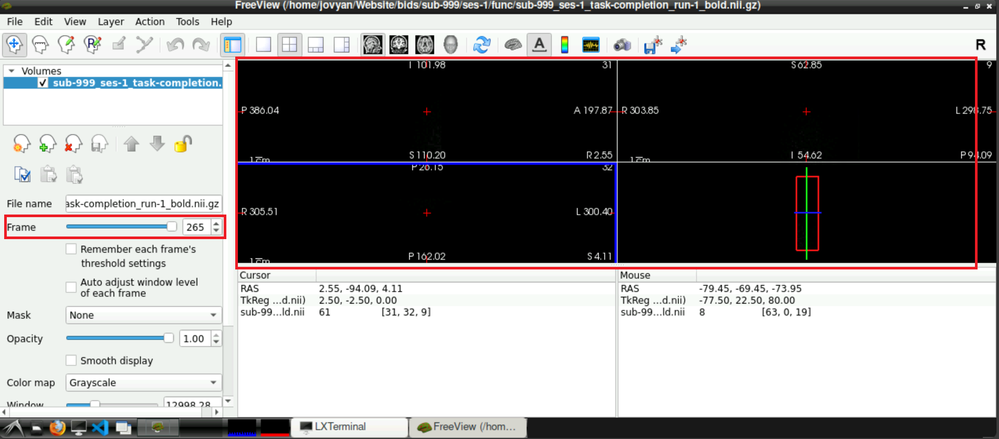
If you confirmed the denoising being present in one of your functional runs, they will probably be there for all your runs. It might be good to check every run anyway.
2 Remove Denoising from the data
You confirmed denoising information being present in your data in the last section. To run fmriprep, we have to remove this information. To achieve this:
Open a terminal
Type
ml freesurferand press enterType
ml fsland press enterSet your working directory to the directory with your functional data (i.e. the
funcdirectory in your BIDS-structure). For this, typecdfollowed by a space and then the path to the directory (type it in, or copy/paste approach described here). In the example below, the complete line iscd /home/jovyan/Website/bids/sub-999/ses-1/func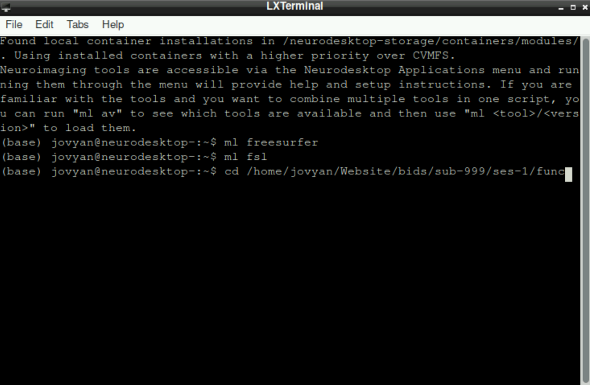
The additional paths on the left of your cursor indicate, that the change of working directory was successfull: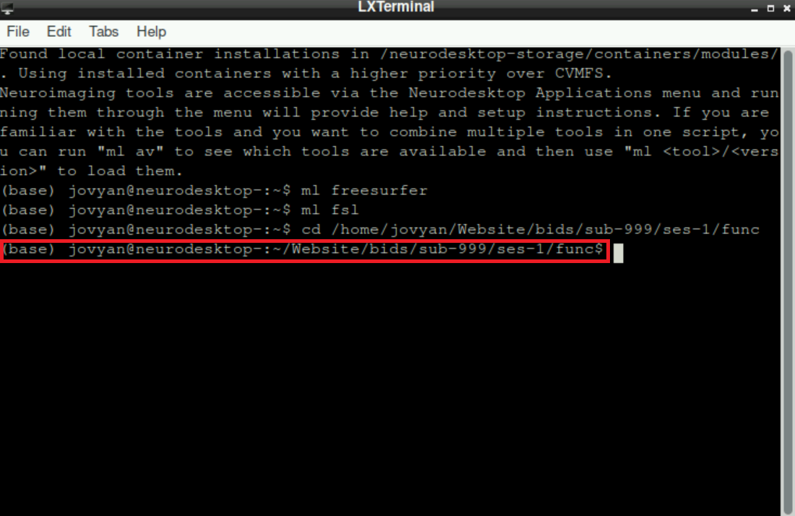
- Now we have to remove the last frame from each nifti file, since the last frame is the denoising. For this, copy paste the following code:
for nii_file in *_bold.nii.gz; do
img_size=$(mri_info --dim "$nii_file" | grep -E '^[0-9]' | awk '{print $NF}')
last_dim=$((img_size - 1))
fslroi "$nii_file" "$nii_file" 0 -1 0 -1 0 -1 0 "$last_dim"
echo "Processed: $nii_file with last dimension: $last_dim"
doneInformation: this code basically searches for all files in your working directory that end on _bold.nii.gz, gets the information about how many frames it includes using mri_info and then removes the last frame (which we confirmed to be the denoising scan prior)
When you copy/paste into the terminal, the line breaks and indentation probably will look different, but this is no problem (see image below). Press enter to execute the pasted code. 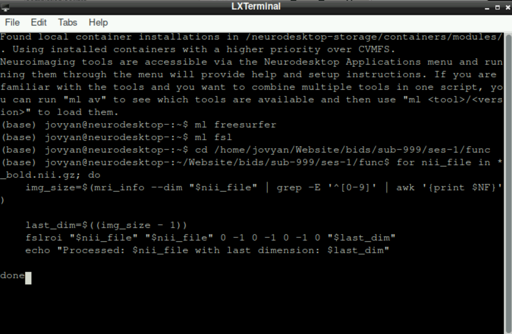
This process can take a while, especially in the beginning. Don´t get stressed out, when nothing happens for a while and only info statements get printed, be patient! 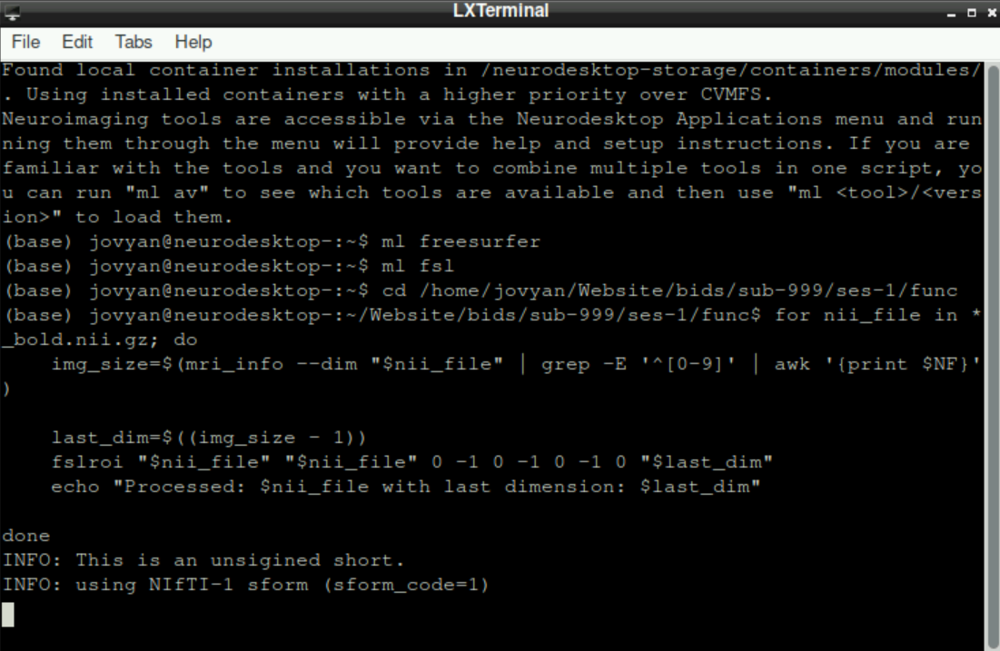
After some time, you will get the information, that the first nifti is processed. This will be repeated for all files in your working directory that end in _bold.nii.gz. Since the working directory is set to our func directory, the functional scans of all runs and potential functional localizer runs will be processed automatically: 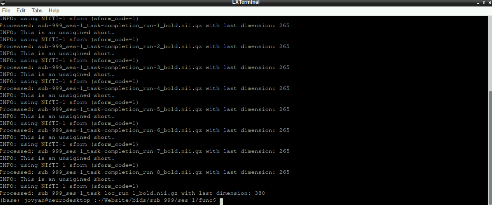
3 Confirm successful removal
To confirm that the noise scan was removed from your functional scans, start freeview, load a functional scan and finally check the last frame. The original “empty” frame should now be removed and final scan should picture “normal” data.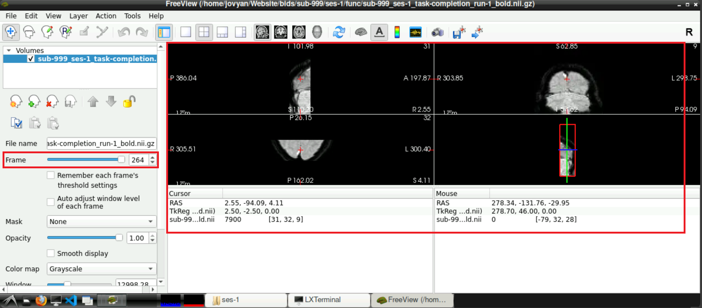
4 Repeat the process for your fmap!
If your functional data were aquired with a denoising sequence and thus contained noise scans, your fmap will probably include noise scans as well! To remove the noise scans from the fmap, the same procedure has to be done, but this time with the fmap file(s):
Open a terminal and source freesurfer & fsl (see Steps 1-3 here)
Set your working directory (this time to your
fmapdirectory!; adapt Step 4)Run the following Code:
for nii_file in *_epi.nii.gz; do
img_size=$(mri_info --dim "$nii_file" | grep -E '^[0-9]' | awk '{print $NF}')
last_dim=$((img_size - 1))
fslroi "$nii_file" "$nii_file" 0 -1 0 -1 0 -1 0 "$last_dim"
echo "Processed: $nii_file with last dimension: $last_dim"
doneInformation: This basically does the same as the Code for removing the noise scan for the functional data (See Step 5 above), but this time, it doesn´t perform the task for files ending in _bold.nii.gz, but for files ending in _epi.nii.gz
Wait until the all files are processed
5 Next steps
Congratulations, you successfully removed the noise scans from your functional and fmap and you are one step closer to analyzing your data!
To continue in your journey to your Analysis, please return to the Overview-Page to check what to do next.
Alternatively, here is a list of potential next steps to continue with